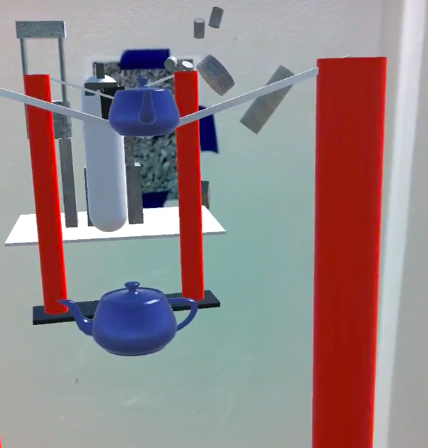
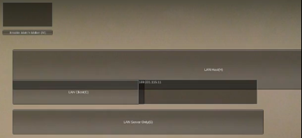
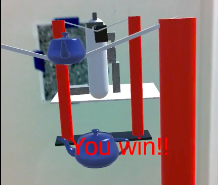

Overview
For AR-Catapults, we wanted to Create an AR experience through a shared, consistent virtual space coinciding with the real world for two or more people. Each player has a Nexus tablet acting as a window into this augmented space, and we display a virtual model of the tablet in the same location. If the players can see each other, the virtual tablet and a simple avatar should be overlaid directly onto the real-world position of the other playerother player. If the players cannot see each other, the avatar and virtual tablet are still displayed, and each player gains x-ray vision through any walls or obstacles. This is the basic environment around which we wanted to design and implement a game.
Tablet Overlay Demonstration
As setup, each player should have a marker on a wall (or other vertical surface) that allows them to face towards the other. It does not matter which direction the marker is facing as we use the internal compasses to make the positive z direction align to magnetic north. Tracking information from Vuforia is used to handle the rest of syncing. There is a simple interface to connect via IP, and once they connect, each player is given a catapult (really more like a slingshot) for launching teapots at the other. When the game starts, a castle spawns behind each player and they begin attempting to topple the castle of the other player. Once enough blocks have fallen away from either castle, the game ends and a winner is declared.
Gameplay Demonstration
Determining Positions
The system works by having the server position itself at (0,0,0) in the virtual world. When players connect, they tell the server where they are in the world, and the server calculates an offset in Unity units for the player to move to. Furthermore, when first seeing a Vuforia marker, the player's device determines the offset between the direction the marker is facing in the real world (using the compass) and where it is expected to be facing in the virtual world and rotates the virtual marker to account for the difference. All virtual movements and rotations are then affected by these offsets, and players can see each other correctly. An important note is that we did not have much of a way to accurately get the real-world position of a player. GPS is not currently designed to work over the small distances (even as small as across a building) we designed for, so instead players may tell the server what offset they wish to be at when connecting.
Mixed Reality Mechanisms
Vuforia
The tracking library Vuforia gives us a position and rotation relative to the first marker that was successfully identified. We use this to maintain a constant world space defined by the marker into which we place the catapults and castles. The default functionality of Vuforia's Unity extension is to place the player's virtual camera, through which they see virtual objects, at the same position it holds in the physical world. This is extremely helpful and matches our game design fairly well, but it prevents us from offsetting the players from each other. Using the default position, each player will appear near the origin (the location of the markers in Unity space. To solve this, when a player joins the server, we construct a new camera that follows the movement and rotation of Vuforia's default camera but is offset by the user-specified distance mentioned above. This camera is the one displayed on the tablet, giving the player the impression that they are offset from the origin.
Compass
As mentioned above, Vuforia only provides a relative position and rotation of the player. Our use case does not
assume any predetermined position or orientation for the marker(s) being tracked. Instead, we wanted north to
always correspond to the positive Z direction regardless of marker used or it's real orientation. Since the user
specifies their
offset, position is established at start time. However, we then have to determine the absolute orientation of
player's tablet in order to correctly place objects around them in virtual space, including the other player.
This is done with the aid of the compass. Once a marker has been found, we begin querying the tablet's compass
and rotate the game object representing the marker to match its real physical orientation. Because the scene is
based off of the marker's position and rotation, rotating the marker rotates the whole scene to correspond
correctly to the player's real-world orientation. However, the readings from the device's compass can be
inconsistent, and updating the marker continuously creates a great deal of jitter in the scene. To avoid this,
we continuously average the results given by the rotation offset calculation, causing the offset to rapidly
converge to the marker's actual rotation. The only disadvantage of this approach is that if the marker rotates
while the game is being played, it will take some time for this to manifest in the player's view of the game
world. You can see this happen at 0:27 in the second video. Thus, we assume that the position and orientation of
the marker remains constant throughout gameplay.
GPS
Although we implemented support for positioning the players using the tablets' GPS, this is not sufficiently accurate indoors for the scales on which we currently play the game. The GPS accuracy varies from 10 to 20 meters. That said, if the players are sufficiently far apart (and preferably outdoors), the GPS should be good enough to provide satisfactory results. More possible ways to improve it are detailed below.
Potential Improvements
Adjustable Marker Size
Because they are the application's only source of physical context, the Vuforia markers determine the scale of the virtual scene. Thus, if a user uses a larger or smaller marker, all the virtual objects and distances will be scaled accordingly. We do not currently provide a means for the user to configure the size of their markers, though this is certainly possible. To implement this, we simply need to dynamically rescale the targets in Unity.
Better GPS
It may be possible to improve the positioning provided by the GPS. Since we assume that the game markers are not moving, we could average the calculated position of each marker over time as we currently do with the compass. Another difficulty with this is that the tablets do not update their GPS information until a player has moved a significant distance and thus this would entail an inconvenient, possibly impracticable calibration step every every time a player connects. However, if this were possible, it might be sufficient to replace manually input offsets.
Design
Unity and Unet
We built our game in Unity, and accomplished communication between devices over Unity’s built-in Unet system. Unet uses a host-clients model, but any device can be a host or client. When setting up a game, one player starts a server on their device and the other connects to it. Unfortunately we had difficulty getting out tablets to accept messages from the other, and so instead during testing and the demonstration we set up one of our computers as the server (although not participating as a player) and had both tablets join as clients.
When one of the tablets is used a server host, when it begins the server it checks it’s GPS location and decides that that location is (0,0,0) in Unity. When one of our computers is used a server, they cannot figure out their in-world position. Instead, when the first tablet connects and tells the server it’s GPS position, the server decides that that position is the origin and replies with an offset of (0,0).
Once the initial rotating and offsetting is done, we can easily use Unity’s default functionality for syncing object transforms to keep them correct. Each player independently tracks and updates their own position and Unet does the work of making the same changes on the other player’s screen. We also sync the positions of the the catapult components for each player and the positions of all the castle blocks. The flying teapots, crumbling castles, and checking for winning is all calculated on the server and displayed on the clients. To best utilize the networking, we made sure tablet positions were synced as often as possible so they move fluidly but dramatically decreased the rate at which blocks of each castle are synced as there are many of them.
Gameplay
We decided to utilize our system by designing a game where each player is given a catapult (really a slignshot) and tasked with toppling the castle of the other player. This seemed like a fun game and would require a large amount of movement in the real world to pull back and launch the projectiles. The actual markers we support are the pebbles and wood chips markers. These are expected to be placed on a wall in portrait orientation. There is a right way up as well, although it the marker is upside down the main effect will be that the virtual world is also displayed upside down, so the player can easily realize they need to flip around the marker.
To correctly set up a game, the host should either choose the large top button to be both a host and a client or the "LAn Server Only" button to only be a host. While John has a fair amount of experience in Unity, neither of us had ever actually programmed GUI’s in it before, so the menus are not very pretty or helpful. We also used Unity's default networking GUI, although we had to scale it up as it originally appeared tiny on our tablet screens. The other player must connect to the server via the IP address field. As it exists currently, the project only accepts exactly two players. Players may connect with a pre-decided offset, and this is input in the unlabeled text box in the upper left corner by typing in a string of the form "x,y". Leaving it empty results in GPS being used.
Once both players are in, if either player presses the "Start Game" button, castles spawn and the game is on. Players much pull back their teapots in order to fire them. The game continues until one of the castles topples sufficiently.
Code Structure
The following is essentially a set of Readme's for looking at important parts of the code. All of the scripts are found in the Assest/Scripts folder.
Followcube:
This is the main script for the player object and controls the position and rotation of player in the world. A significant portion of the code in this script is setting up the game aspect and the methods to interface with Vuforia (spawning GUI objects, setting up game components, finding vuforia's unity camera, moving it's rendering of the camera feed into our new camera, etc.), but this also includes a lot of the important code for the actual AR systems.
In the Update function you can find the code for reading GPS (or a given offset) and communicating with the
server to determine the resulting virtual offset. Players first wait for their location services start, and then
once they do tell the server where they are in the world (or where they want to be in the virtual world).
Another possible result of this first question is that the server will decide that that is it's own location if
it does not have access to location services itself. The server then either sends them back an offset in virtual
space they should place themselves (see the OnGetOffset function) or a flag offset meaning the server's location
services have not started yet. The player then keeps asking the server where they should be in virtual space
until the server responds with a valid offset.
The LateUpdate function handles moving the camera the player actually sees through and the use of the compass.
The first part simply sets the local position (within this object that is at the correct offset) of the used
camera to the global position of Vuforia's camera. The last part handles using the compass. We determine the
difference between the direction a player is facing in-game and where the compass is facing and rotate the
virtual version of the marker to compensate. This in turn changes where the Vuforia camera is in-game and
therefore the local positon/rotation of our camera. We chose to rotate the marker instead of the camera directly
because problems rendering the camera feed correctly arose when we tried that. We also cannot use the compass
information so simply as it jitters far too much. Instead, we only rotate part of the way, with this amount
decreasing every time we do so. Above we have called this a continuous average, although more accurately it's
really a continuous decreasing spherical interpolation.
GPSScript
This script handles the actual setting up and reading of GPS and compass values. Other scripts (primarily Followcube) refer to this script. There are perhaps more than necessary precautions taken in the Start function to make sure the compass is enabled, but this is due to the extreme difficulty we had actually enabling the compass. For some reason, the compass would enable and all possible checks would declare the compass was working but we would always get a heading of 0 degress. This setup got it working for slightly unfathomable reasons and so I never changed it.
ServerScript
MultiTrackingScript
MultiTrackingScript was originally an experimental script we wrote to try and improve tracking of multiple
targets by making a wrapper around objects in the scene a child of the currently best-tracked image target.
However, it appears that this is similar to what Vuforia does, though Vuforia will reset the position of the
scene if tracking is completely lost. We ended up just allowing Vuforia to take care of the scene position.
However, the method GetBestTracked() in this script is still used by GPSScript when repositioning the current
marker to match the results from the compass.